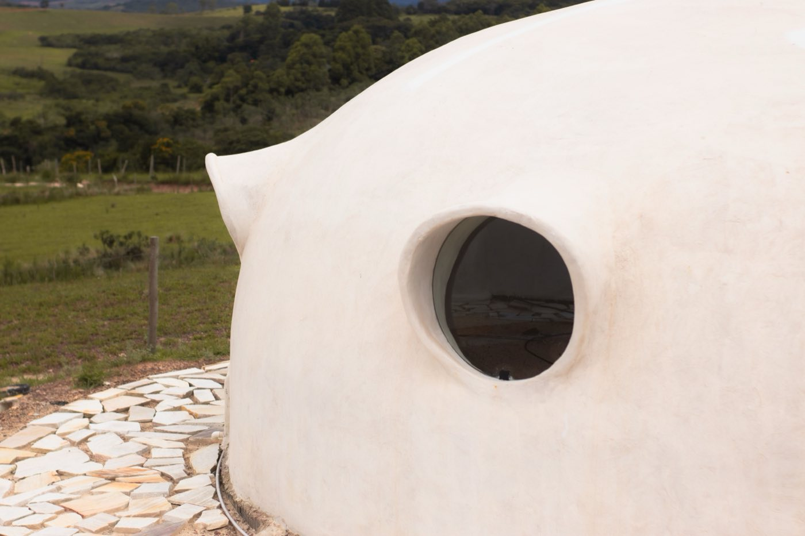

Earthbag, Superadobe & Hyperadobe
The cheapest resilient shell there is: soil packed into bags or mesh tubes, stacked and tamped. From Nader Khalili's superadobe to Fernando Pacheco's hyperadobe, like 3D-printing an earthen home by hand.

- Long bags or mesh tubes filled with damp soil, laid in courses, tamped, with barbed wire between layers for shear. A load-bearing wall made of your own dirt.
- Owner-built, materials run $20–$35 per sq ft against $150–$250 for conventional stick-built. Almost the entire difference is your labour.
- Superadobe earned an ICC-ES approval in 2021, so a stamped drawing can now reference it at a US building department. It is no longer code-orphaned.
- A 15 ft dome survived simulated quakes past magnitude 7.0, and a Nepali earthbag orphanage took a real 7.6 in 2015.
- Water is still the entire problem. In the wet tropics that is not a footnote, it is the design brief.
Fill a long tube with damp subsoil, lay it in a coil, tamp it firm, run barbed wire between the courses, and repeat. What you get is a load-bearing earthen wall for the price of dirt, and in dome form, one of the most disaster-resistant structures anyone has tested. If you have written this off as hippie architecture, two things have changed that are worth knowing about.
Superadobe → hyperadobe: the family
Earthbag is the umbrella term for stacking soil-filled bags into walls.
Superadobe is architect Nader Khalili's version, developed at CalEarth: long polypropylene tubes filled with damp soil, often with 10 to 15% cement, coiled into domes. It is the branch with the testing and the code approval behind it.
Hyperadobe is Fernando Pacheco's refinement from the 2010s. It swaps the solid poly bag for raschel knitted mesh tubing — the netting oranges come in. The mesh lets soil key through from course to course and lets plaster grab the wall directly, so layers bond into something closer to monolithic. Builders describe it as 3D-printing an earthen home by hand. It is cheaper, lighter, and easier on your back.
One design decision outranks all the others: round or rectangular. A dome or circular wall is self-supporting and needs no separate roof structure at all. Go rectangular and you are back to conventional roof framing, with its materials, its labour and its cost. That single choice moves the price per square foot more than anything else on this page.

The cheapest wall there is
Materials are close to free, and that is not marketing. Polypropylene bags run $0.10 to $0.30 each in bulk, and a 500 sq ft home needs somewhere between 3,000 and 5,000 of them. Call it a thousand dollars of bags for a small house.
The fill wants roughly 30% clay to 70% sand and aggregate. If your site soil is close to that, it costs nothing but the digging. If it is not, imported road base or a sand-clay mix runs $5 to $25 per cubic yard, and a 1,000 sq ft home might need 50 to 100 yards. Budget the foundation at 10 to 15% of total build cost.
Treat the very low numbers with care. Documented builds land nearer $14 to $16 per sq ft with volunteer crews, and organised projects — including an earthbag clinic and school in Léogâne, Haiti — have run over budget. Cheap materials do not make a cheap project on their own.
Hire the work out and the picture inverts completely. Earthbag is slow, physical, hand-built construction, so paid labour dominates immediately and the headline saving evaporates. This method rewards sweat, not capital.
It has a code number now
Here is the update most earthbag guides have not caught up with. Superadobe is no longer outside the code system.
After roughly two years of testing and more than $200,000 raised for the effort, CalEarth was issued an ICC-ES number for cement-stabilised superadobe earthbags in June 2021. The evaluation report states compliance with the 2018 International Residential Code and the 2019 California Building Code, as an alternative to adobe masonry for single-storey residential structures.
What that practically means: a builder can now reference the ICC-ES report on drawings submitted to a building department, provided a design professional stamps them. Superadobe joined strawbale as one of the very few natural building techniques with real ICC criteria behind it.
Two caveats before you get excited. The approval covers cement-stabilised superadobe specifically, not every earthbag variant, and not hyperadobe mesh. And it is a US code instrument. It carries no automatic weight in Panama or Costa Rica — but it is exactly the kind of document that helps a local engineer feel comfortable putting their stamp on something unfamiliar, which is usually the real bottleneck.
The seismic record
This is the part that surprises people, and it is unusually well documented for a natural building method.
CalEarth put superadobe structures through full International Building Code testing in the 1990s. They passed California seismic zone 4 requirements, the most stringent in the country. A 15-foot-diameter dome withstood simulated earthquakes exceeding magnitude 7.0 without structural failure.
Then the real world weighed in. Structures on the CalEarth site came through the 1994 Northridge earthquake, a 6.7. An earthbag orphanage in Nepal stood through the magnitude 7.6 tremor in 2015.
The engineering makes sense once you look at it. The coiled bags act in vertical compression, and the barbed wire between courses provides shear resistance that University of Bath researchers found comparable to Type S mortar in unreinforced masonry. The geometry contributes the rest: a dome has no corners to concentrate stress and no separate roof to shake loose. Measured compressive strength for moistened sandy-clay subsoil tamped to refusal came in around 74 psi.
Gains and trade-offs
| Factor | Rating | Notes |
|---|---|---|
| Material cost | 🟢 | $0.10–$0.30 a bag and free soil if your site cooperates |
| Contracted cost | 🔴 | Slow hand labour, so paid crews erase the advantage |
| Sustainability | 🟢 | Soil has the lowest embodied energy of any structural material |
| Seismic | 🟢 | Tested to California zone 4; real-world survival past M7 |
| Wind & fire | 🟢 | A monolithic earthen dome gives both very little to work with |
| DIY-friendly | 🟢 | The method for owner-builders, hyperadobe especially |
| Build speed | 🔴 | Slow, heavy, entirely hand-built |
| Heat | 🟢 | Thick earthen walls with genuine thermal mass |
| Rain & damp | 🔴 | The one true weakness, and the tropics attack it daily |
| Code status | 🟡 | ICC-ES approved in the US for cement-stabilised superadobe since 2021 |
| Insurance & mortgage | 🔴 | Still very hard to finance or insure in this region |
Can you build one here?
Physically, yes. Earthbag is built across Latin America, and the seismic performance is a genuine asset in Costa Rica rather than a talking point.
But the tropics aim the method's single weakness at it every afternoon. Earth and water do not coexist, and a tropical earthbag home lives or dies on four details: a raised foundation that keeps the lowest course clear of splash and standing water, roof overhangs generous enough to keep driving rain off the wall face, plasters that protect without sealing the wall shut, and drainage that moves water away from the base rather than around it. Get those right and it works. Get one wrong and you find out slowly.
The harder obstacle is paperwork. Permitting, insuring and financing an earthen home here remains genuinely difficult, ICC report or not. Which is why in practice this is an owner-built, off-grid or experimental path — a wonderful way to build a guest casita, a studio or a personal project, and rarely the pragmatic route to a bank-financed family home you need insured.
If the appeal is thermal mass and earthen walls with an easier permitting story, rammed earth engineers more conventionally. If it is disaster resistance you are after, ICF gets you there with a mortgage attached. The full comparison puts them side by side.
Dreaming of an earthen dome but need it to insure?
Earthbag is a beautiful owner-built project and a hard thing to finance. If you want the thermal mass and the storm resistance on a house a bank will lend against, we can price the versions that get there.
See real 2026 build costs →Frequently asked questions
What is the difference between earthbag, superadobe and hyperadobe?
Earthbag is the general technique of stacking soil-filled bags into walls. Superadobe is Nader Khalili’s version at CalEarth, using long polypropylene tubes coiled into domes, usually with some cement. Hyperadobe is Fernando Pacheco’s refinement, replacing the solid bag with raschel knitted mesh so soil and plaster key through and layers bond into something closer to monolithic.
What does an earthbag home actually cost?
Owner-built, materials run roughly $20 to $35 per square foot against $150 to $250 for conventional stick-built. Bags are $0.10 to $0.30 each and a 500 sq ft home needs 3,000 to 5,000 of them. Hire the labour out and the advantage disappears, because this is slow hand construction and paid crews dominate the budget.
Is superadobe approved by building codes?
In the US, partly. CalEarth was issued an ICC-ES number in June 2021 for cement-stabilised superadobe earthbags, showing compliance with the 2018 IRC and 2019 California Building Code as an alternative to adobe masonry for single-storey homes. A builder can cite it on stamped drawings. It does not cover every earthbag variant, and it carries no automatic force in Panama or Costa Rica.
Are earthbag homes safe in earthquakes?
Unusually so. Superadobe passed California seismic zone 4 testing, and a 15 ft dome withstood simulated quakes above magnitude 7.0. Structures survived the 1994 Northridge quake, and an earthbag orphanage in Nepal came through a magnitude 7.6 in 2015. The barbed wire between courses provides shear resistance researchers found comparable to Type S mortar.
Can you build an earthbag home in a wet tropical climate?
Carefully, and the detailing is not optional. You need a raised foundation clear of splash and standing water, generous roof overhangs, protective but breathable plaster, and drainage that carries water away from the base. It is done regularly. The bigger practical hurdles here are usually permitting, insurance and financing rather than the building itself.
Sources & verification
Figures in this guide were checked against primary and authoritative sources on 6 September 2026. Immigration, tax, and cost figures change — always confirm the current rules with the official body or a licensed professional before acting.
- CalEarth — SuperAdobe ICC-ES approval, June 2021
- Earthbag Building — superadobe seismic and structural testing record
- HomeGuide — 2026 earthbag home cost data
- Natural Building Blog — realistic costs and documented overruns